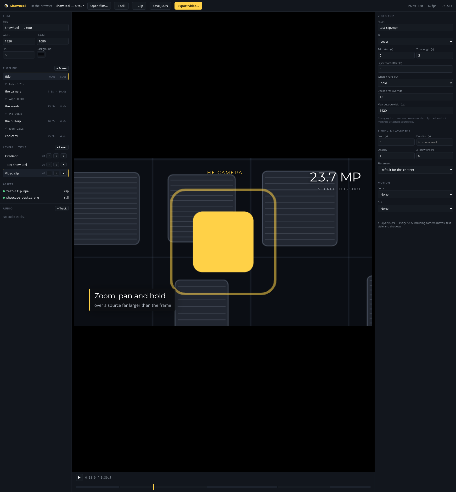
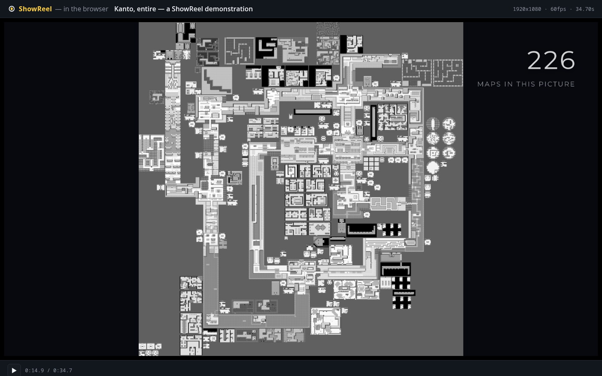

Project · Video rendering
ShowReel
A Rust crate that turns a description of a film — a timeline, a camera, typography,
transitions — into a deterministic mp4. No browser, no Node, no headless Chromium to
render it: tiny-skia and rustybuzz draw the pixels and the
glyphs, ffmpeg encodes. The same renderer also compiles to WebAssembly, so
a film scrubs and edits in a browser tab with no server behind it at all.
The example film: 1920×1080 at 60fps, 2082 frames, 20 cores. Two renders of the same film give byte-identical PNGs and byte-identical mp4s.
showreel render — not edited by hand afterward. Seven scene changes, no
two transitions alike: a camera pulling back over a 57-megapixel still, a push-in over
a decoded video clip, the same frame ungraded and then graded, three depth planes cut
from one flat image, and a title built from filled vector glyphs, over two audio tracks
mixed together. The file behind every shot,
examples/showreel_demo.film.jsonc in the repository, reads top to bottom
the way the reel plays.

What it does
Everything here is built and shipping.
Authoring
A value, not a macro DSL
- A film is a Rust builder or a JSON tree — the same tree either way, written by hand, generated, or handed over by a tool
- A timeline is
Scene (Transition Scene)*— two transitions in a row cannot be written down, in either form showreel newscaffolds a working starter film that needs no assets at all.jsonctakes comments and a trailing comma; a plain.jsonfile still loads exactly as before
The camera
Holds steady over 48 megapixels
- Geometrically-interpolated pan, zoom and hold, keyframed by
Shots, over a mip-backed still - A 6832×7024 source renders to 1080p at 4.3 ms/frame across 20 threads — cost tracks the output size, not the source
- Nearest-neighbour resampling when the camera magnifies, so pixel art stays sharp instead of turning to mush
Content::Parallax: several depth planes share one authored camera move, each departing from it by its own fraction
On screen
Glyphs as filled paths
- Real shaping and kerning, tracking in ems, tabular figures so a counter doesn't jitter as it ticks
- Nine transitions — cut, dissolve, fade-through-colour, wipe, slide, push, iris, zoom, cross-blur — each composable with any easing curve or spring
- Titles, lower-thirds, callouts that point at things, counters that count
- A pull-up that lifts a region of the frame, dims the rest, and annotates it; a progress bar that fills without drawing digits
Audio
Tracks, ducking, a clip's own mix
- Any audio file placed and trimmed on the film's own clock, with fades, gain, several tracks mixed
- A clip's own soundtrack joins the mix by default — mute, duck or fade it independently
- Reaches both the full-quality master and the 720p/30fps mobile cut
- Won't loop a clip's audio to match a looping picture, and drops it rather than play it out of sync when the clip runs at another speed — documented, not silent
Automation
A studio, an API, an agent
showreel studio: a scrubber, live reload, and the film's structure in a browser, behind an opt-in feature flag- Four HTTP endpoints riding that same server — info, check, still, render — so a script can drive it without shelling out to the CLI
showreel mcp: five tools over the officialrmcpSDK, for an agent already in the same process tree- One implementation of "render a still" underneath all three surfaces, not three
No server
Compiled to WebAssembly
showreel web-packturns a film into a static directory any file host can serve — the renderer compiled towasm32-unknown-unknown- Scrubs and edits there exactly as the native studio does, down to reordering scenes and saving the changed film back out
- Dropping a clip in decodes it client-side with no ffmpeg, through the
browser's own
<video>decoder - Exports a real WebM —
VideoEncoder(WebCodecs) plus a hand-rolled muxer, verified round-trip againstffprobe
What it costs
Measured on the machine that renders it — a 20-core box, the build in this repository. Every figure names its own thread count.
| Measurement | Result |
|---|---|
| Whole example film, full quality (2082 frames, 20 cores) | 12.0 ms/frame · 83 fps |
| — the 48 MP camera pull-back alone (660 frames) | 15.2 ms/frame · 66 fps |
| — a 0.35-scale preview pass | 3.1 ms/frame · 318 fps |
| 48 MP camera: crop & resample from full res, 1 thread | 142.1 ms/frame |
| 48 MP camera: mip pyramid, 1 thread | 42.2 ms/frame |
| 48 MP camera: mip pyramid, 20 threads | 4.3 ms/frame |
| Parallax, 3 planes at 1080p, 1 thread | ~45 ms/frame |
| — one ordinary still+camera layer, for comparison | ~15 ms/frame |
| Cross-blur dissolve, full-frame blur pass | ~170 ms/call |
x264 encode, crf 17 preset slow, ~3.15 cores | 12.1 ms/frame |
| Serial render vs. 20-thread parallel | byte-identical |
The pyramid is what makes the camera figure hold: choosing an already-shrunk level before resampling makes cost track the output area instead of the source area, near- constant whatever the zoom. It is built once at load — 523 ms for the 48 MP source — and holds 192 MB resident. The cross-blur cost is per call, twice a transition frame, independent of blur radius; a short transition keeps it bounded, a film-length one would not.

Where the gaps are
- Browser export is picture-only. Studio playback has real audio — a film's own tracks decoded live and mixed in sync with the scrub — but the exported WebM does not mux it in yet.
- No colour grade. Nothing tone-maps a finished frame — no LUT, no saturation/contrast pass, no vignette. Confirmed absent by reading the render pipeline, not assumed. Why it's the one thing missing →
- ffmpeg still does the encode and the decode. The fastest realistic pure-Rust encoder measured about 30× slower than this crate's own x264 settings on identical frames, and no mature pure-Rust general video decoder exists yet either.
-
A clip's camera isn't mip-backed. Pushing in tight on footage, rather than a
still, needs
max_widthraised to match or the image goes soft. -
Depth planes are hand-split.
Content::Parallaxcomposes planes that already exist; cutting one screenshot into two or three layers is still a person's job, upstream of the crate. - No rich text runs. Every layer is one style for its whole string — a caption where a single word changes weight or colour mid-line needs a second layer, not a style range.
Milestones
Generated music, timed to the film
A track's source can now be a synthesised chiptune instead of a file — no bed to
license, and fit: "film" lands the last downbeat on the final frame.
Read it →
Six of seven, already built
A study of a specific YouTube editor's technique found ShowReel already had almost everything the look needed. The one clean gap was small. Read it →
The browser became an editor
Export without ffmpeg: a real VideoEncoder and a hand-rolled WebM
muxer, verified round-trip against ffprobe.
Compiled to WebAssembly
The renderer runs in a browser tab. A film scrubs with no server behind it, and a dropped clip decodes client-side with no ffmpeg.
The number that could have sunk it
A 120-frame pull-back over a 48-megapixel still came back at 4.3 ms a frame, settling whether to build a camera at all. Read it →
Writing
-
The chiptune that outgrew its blog post
A demo video needed music with no licence to worry about, so a 114-line Python script wrote its own chiptune. Eighteen minutes after the obvious question got asked, it was a built-in feature.
-
The one clean miss
The captain wanted the display style of a specific YouTube editor. Six of the seven techniques it needed already existed.
-
The number that could have sunk it
Could Remotion open on a title screen, pull back to a whole world map, and burst out real footage from where it happened? The one real unknown came back at 4.3 milliseconds a frame.
Where these numbers come from
Every timing figure is ShowReel's own, measured on the machine that rendered it, with
the exact command recorded beside it in the source repository. Line and module counts
are counted directly from the crate's own src/ tree.
ShowReel ships no game assets of its own — the worked example's Pokémon Blue stills belong to whoever owns that cartridge and are not in the crate. The screenshots here are of the crate's own tooling, the browser editor and the wasm build, which the project is free to show.